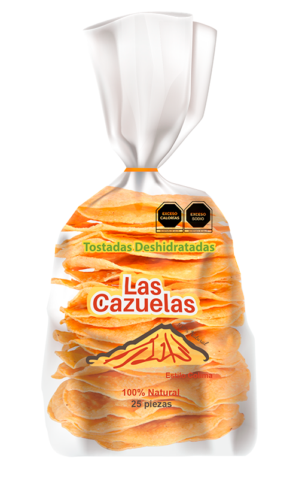

NUESTROS PRODUCTOS
TOSTADAS, TOTOPOS Y TORTILLAS DE HARÍNA
Deshidratada
Tradicional
Cevichera

Tostadas 100% naturales. Preparadas cuidadosamente, permitiendo conservar las bondades del maiz y su sabor original, aportando una consistencia crujiente y firme.


TRADICIONAL
Elaborado a partir de tortillas de maíz frita de manera tradicional, suave y crujientes. Ideal para acompañar el pozole o cualquier platillo tradicional mexicano.

DESHIDRATADA
Elaboradas con masa de maíz, deshidratadas, un producto que puedes acompañar con diversas recetas de comida mexicana. Sin colesterol.

CEVICHERA
Tostada ideal para mariscos ya que no se aguada por la humedad de la comida. disfrutando por más tiempo tus alimentos. A pesar de la resistencia es suave al masticar.

TORTILLAS DE HARINA
Totrtillas de textura ligera, perfectamente dorada en el exterior y tierna en el interior. Con un sabor delicado a maíz y trigo, son versátiles para enrollar rellenos sabrosos o disfrutar sola.
LAS DELICIAS DEL MAÍZ

TOTOPOS
Transforma tus platillos en deliciosas opciones mexicanas, para unos deliciosos chilaquiles o para botanear, es fácil, rápido. Elaborados con masa de maíz.
CHILES Y ESPECIAS
En especias y chiles contamos con el mejor precio de la región, ya que contamos con proveedores directos del campo.
CHILES Àrbol, guajillo, dorado, ancho, cascabel
ESPECIAS Pimienta, ajo, canela, ajonjolí, clavos, cominos, etc.